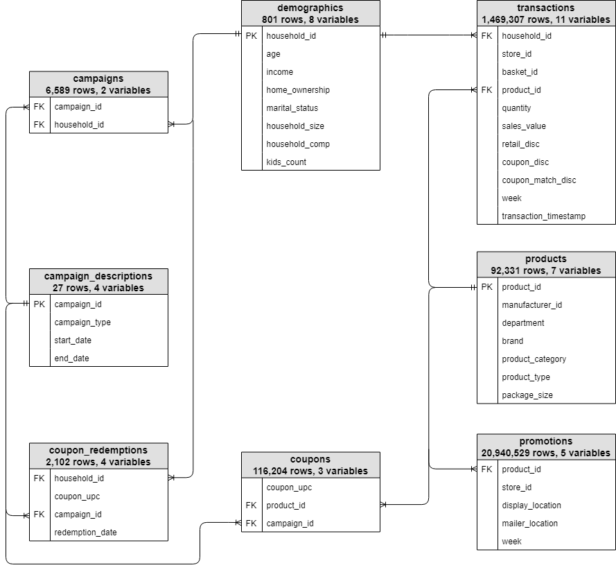

vignettes/completejourney.Rmd
completejourney.Rmdcompletejourney provides access to data sets characterizing household level transactions over one year from a group of 2,469 households who are frequent shoppers at a grocery store. It contains all of each household’s purchases, not just those from a limited number of categories. For certain households, demographic information as well as direct marketing contact history are captured.
Due to the number of tables and the overall complexity of The Complete Journey, it is suggested that this database be used in more advanced classroom settings. Further, The Complete Journey would be ideal for academic research as it should enable one to study the effects of direct marketing to customers.
The following are examples of questions that could be submitted to students or considered for academic research:
There are eight built-in data sets available in this package (see
data(package = 'completejourney'). The data sets
include:
campaigns: campaigns received by each householdcampaign_descriptions: campaign metadata (length of
time active)coupons: coupon metadata (UPC code, campaign,
etc.)coupon_redemptions: coupon redemptions (household, day,
UPC code, campaign)demographics: household demographic data (age, income,
family size, etc.)products: product metadata (brand, description,
etc.)promotions_sample: a sampling of the product placement
in mailers and in stores corresponding to advertising campaignstransactions_sample: a sampling of the products
purchased by householdsDue to the size of the transactions and promotions data, the package
provides a sampling of the data built-in with
transactions_sample and promotions_sample.
However, you can access the full promotions and transactions data sets
from the source GitHub repository with the following:
# get the full transactions data set
transactions <- get_transactions()
transactions
## # A tibble: 1,469,307 x 11
## household_id store_id basket_id product_id quantity sales_value retail_disc
## <chr> <chr> <chr> <chr> <dbl> <dbl> <dbl>
## 1 900 330 31198570… 1095275 1 0.5 0
## 2 900 330 31198570… 9878513 1 0.99 0.1
## 3 1228 406 31198655… 1041453 1 1.43 0.15
## 4 906 319 31198705… 1020156 1 1.5 0.290
## 5 906 319 31198705… 1053875 2 2.78 0.8
## 6 906 319 31198705… 1060312 1 5.49 0.5
## 7 906 319 31198705… 1075313 1 1.5 0.290
## 8 1058 381 31198676… 985893 1 1.88 0.21
## 9 1058 381 31198676… 988791 1 1.5 1.29
## 10 1058 381 31198676… 9297106 1 2.69 0
## # … with 1,469,297 more rows, and 4 more variables: coupon_disc <dbl>,
## # coupon_match_disc <dbl>, week <int>, transaction_timestamp <dttm>
# get the full promotions data set
promotions <- get_promotions()
promotions
## # A tibble: 20,940,529 x 5
## product_id store_id display_location mailer_location week
## <chr> <chr> <fct> <fct> <int>
## 1 1000050 316 9 0 1
## 2 1000050 337 3 0 1
## 3 1000050 441 5 0 1
## 4 1000092 292 0 A 1
## 5 1000092 293 0 A 1
## 6 1000092 295 0 A 1
## 7 1000092 298 0 A 1
## 8 1000092 299 0 A 1
## 9 1000092 304 0 A 1
## 10 1000092 306 0 A 1
## # … with 20,940,519 more rows
demographics
This table contains demographic information for a portion of households. Due to nature of the data, the demographic information is not available for all households.
| Variable | Description |
|---|---|
household_id |
Uniquely identifies each household |
age |
Estimated age range |
income |
Household income |
home_ownership |
Homeowner, renter, etc. |
marital_status |
Marital status (Married, Single, Unknown) |
household_size |
Size of household up to 5+ |
household_comp |
Household composition |
kid_count |
Number of children present up to 3+ |
transactions
Contains transaction-level product purchases by households (what you
would normally see on a receipt). Use a sample of all transactions
(transactions_sample) or get the entire data set with
get_transactions().
| Variable | Definition |
|---|---|
household_id |
Uniquely identifies each household |
store_id |
Uniquely identifies each store |
basket_id |
Uniquely identifies each purchase occasion |
product_id |
Uniquely identifies each product |
quantity |
Number of the product purchased during the trip |
sales_value |
Amount of dollars the retailer receives from sale |
retail_disc |
Discount applied due to the retailer’s loyalty card program |
coupon_disc |
Discount applied due to a manufacturer coupon |
coupon_match_disc |
Discount applied due to retailer’s match of manufacturer coupon |
week |
Week of the transaction; Ranges 1-53 |
transaction_timestamp |
Date and time of day when the transaction occurred |
The variable sales_value in this table is the amount of
dollars received by the retailer on the sale of the specific product,
taking the coupon match and loyalty card discount into account. It is
not the actual price paid by the customer. If a customer uses a coupon,
the actual price paid will be less than the sales_value
because the manufacturer issuing the coupon will reimburse the retailer
for the amount of the coupon.
To calculate the actual product prices, use the formulas below:
The example below demonstrates how to calculate the actual shelf price of the product:
retail_disc and coupon_disc were both zero,
meaning the price of the product is the same as the amount received by
the retailer.campaigns
Contains identifying information for the marketing campaigns each households participated in.
| Variable | Definition |
|---|---|
campaign_id |
Uniquely identifies each campaign; Ranges 1-27 |
household_id |
Uniquely identifies each household |
campaign_descriptions
Contains campaign metatdata, specifically the time a campaign was active.
| Variable | Definition |
|---|---|
campaign_id |
Uniquely identifies each campaign; Ranges 1-27 |
campaign_type |
Type of campaign (Type A, Type B, Type C) |
start_date |
Start date of campaign |
end_date |
End date of campaign |
products
Contains metatdata regarding the products purchased (brand, description, etc.).
| Variable | Definition |
|---|---|
product_id |
Uniquely identifies each product |
manufacturer_id |
Uniquely identifies each manufacturer |
department |
Groups similar products together |
brand |
Indicates private or national label brand |
product_category |
Groups similar products together at lower level |
product_type |
Groups similar products together at lowest level |
package_size |
Indicates package size (not available for all products) |
coupons
This table lists all the coupons sent to customers as part of a campaign, as well as the products for which each coupon is redeemable. Some coupons are redeemable for multiple products. One example is a coupon for any private label frozen vegetable. There are a large number of products where this coupon could be redeemed.
For campaign TypeA, this table provides the pool of possible coupons. Each customer participating in a Type A campaign received 16 coupons out of the pool. The 16 coupons were selected based on the customer’s prior purchase behavior. Identifying the specific 16 coupons that each customer received is outside the scope of this database.
For campaign Type B and Type C, all customers participating in a campaign receives all coupons pertaining to that campaign.
| Variable | Definition |
|---|---|
coupon_upc |
Uniquely identifies each coupon (unique to household and campaign) |
product_id |
Uniquely identifies each product |
campaign_id |
Uniquely identifies each campaign |
coupon_redemptions
Contains individual coupon redemptions (household, day, UPC code, campaign) that can be used to measure campaign efficacy and coupon usage on specific products.
| Variable | Definition |
|---|---|
household_id |
Uniquely identifies each household |
coupon_upc |
Uniquely identifies each coupon (unique to household and campaign) |
campaign_id |
Uniquely identifies each campaign |
redemption_date |
Date when the coupon was redeemed |
promotions
Contains product placement information (e.g. mailer page placement
and in-store display placement) corresponding to campaigns. Use a sample
of all promotions (promotions_sample) or get the entire
data set with get_promotions().
| Variable | Definition |
|---|---|
product_id |
Uniquely identifies each product |
store_id |
Uniquely identifies each store |
display_location |
Display location (0-no display, 1-store front, 2-store rear, 3-front end cap, 4-mid-aisle end cap, 5-rear end cap, 6-side aisle end cap, 7-in-aisle, 9-secondary location display, A-in-shelf) |
mailer_location |
Mailer location (0-not on ad, A-interior page feature, C-interior page line item, D-front page feature, F-back page feature, H-wrap front feature, J-wrap interior coupon, L-wrap back feature, P-interior page coupon, X-free on interior page, Z-free on front page, back page, or wrap) |
week |
Week of the transaction; Ranges 1-53 |
John Smith is a valued customer at a national grocery retailer for
which we have detailed transaction data. Throughout all the tables in
the database, he is identified with a household_id of
“208”.
To learn a little about John, we can obtain his demographic
information by looking at the record in the demographics
table where household_id = "208". The table below shows the
information we receive, and tells us that he is a homeowner, who makes
between $50,000 and $74,000 a year and is between 45 and 54 years
old.
demographics %>%
filter(household_id == "208")
## # A tibble: 1 x 8
## household_id age income home_ownership marital_status household_size household_comp
## <chr> <ord> <ord> <ord> <ord> <ord> <ord>
## 1 208 45-54 50-74K Homeowner NA 2 2 Adults No K…
## # … with 1 more variable: kids_count <ord>If we look at John’s records from campaigns, we can see
that he received 7 different campaigns.
campaigns %>%
filter(household_id == "208")
## # A tibble: 7 x 2
## campaign_id household_id
## <chr> <chr>
## 1 13 208
## 2 17 208
## 3 18 208
## 4 22 208
## 5 26 208
## 6 27 208
## 7 8 208These campaigns were spread out over the one year period of the
study. To understand the time periods and types of these campaigns, you
can join with the campaign_descriptions data. In this
example, we see the type of campaign along with the start and end dates
of the campaign.
campaigns %>%
filter(household_id == "208") %>%
left_join(., campaign_descriptions, by="campaign_id") %>%
arrange(start_date)
## # A tibble: 7 x 5
## campaign_id household_id campaign_type start_date end_date
## <chr> <chr> <ord> <date> <date>
## 1 26 208 Type B 2016-12-28 2017-02-19
## 2 27 208 Type A 2017-02-08 2017-03-26
## 3 8 208 Type A 2017-05-08 2017-06-25
## 4 13 208 Type A 2017-08-08 2017-09-24
## 5 17 208 Type B 2017-10-18 2017-11-19
## 6 18 208 Type A 2017-10-30 2017-12-24
## 7 22 208 Type B 2017-12-06 2018-01-07Let us take a closer look at campaign 18 When we look at all the
distinct coupon_upc’s from the coupon table where
campaign_id = "18", we see that there were 209 distinct
coupons sent out as part of that campaign.
coupons %>%
filter(campaign_id == "18") %>%
distinct(coupon_upc)
## # A tibble: 209 x 1
## coupon_upc
## <chr>
## 1 10000085475
## 2 10000085476
## 3 10000085477
## 4 10000085478
## 5 10000085479
## 6 10000085480
## 7 10000085484
## 8 10000089237
## 9 10000089238
## 10 10000089239
## # … with 199 more rowsLet us take an even deeper look at one of the specific coupons
offered as part of the campaign. If we print out all records from the
coupon table where campaign_id = "18" and
coupon_upc = "55410000076", we see that this coupon could
actually be redeemed for a number of products.
coupons %>%
filter(campaign_id == "18",
coupon_upc == "55410000076")
## # A tibble: 50 x 3
## coupon_upc product_id campaign_id
## <chr> <chr> <chr>
## 1 55410000076 1004458 18
## 2 55410000076 1011841 18
## 3 55410000076 1016495 18
## 4 55410000076 10182852 18
## 5 55410000076 1018696 18
## 6 55410000076 1058591 18
## 7 55410000076 1065032 18
## 8 55410000076 1069973 18
## 9 55410000076 107157 18
## 10 55410000076 1110721 18
## # … with 40 more rowsAlthough all the products are not displayed above, we find that this
coupon is actually valid on 50 distinct products. If we go to the
product table and print out all records for the
product_id’s above (“1004458”, “1011841”, etc.), we see
that this coupon is valid for pickles from a national brand.
coupons %>%
filter(campaign_id == "18",
coupon_upc == "55410000076") %>%
left_join(., products, by="product_id") %>%
select(product_id, manufacturer_id, department, brand,
product_category, product_type, package_size)
## # A tibble: 50 x 7
## product_id manufacturer_id department brand product_category product_type
## <chr> <chr> <chr> <fct> <chr> <chr>
## 1 1004458 1318 GROCERY Nati… PICKLE/RELISH/P… PICKLES
## 2 1011841 1318 GROCERY Nati… PICKLE/RELISH/P… PICKLES
## 3 1016495 1318 GROCERY Nati… PICKLE/RELISH/P… PICKLD VEG …
## 4 10182852 1318 GROCERY Nati… PICKLE/RELISH/P… PICKLES
## 5 1018696 1318 GROCERY Nati… PICKLE/RELISH/P… PICKLES
## 6 1058591 1318 GROCERY Nati… PICKLE/RELISH/P… PICKLES
## 7 1065032 1318 GROCERY Nati… PICKLE/RELISH/P… PICKLES
## 8 1069973 1318 GROCERY Nati… PICKLE/RELISH/P… PICKLES
## 9 107157 1318 GROCERY Nati… PICKLE/RELISH/P… PICKLES
## 10 1110721 1318 GROCERY Nati… PICKLE/RELISH/P… PICKLES
## # … with 40 more rows, and 1 more variable: package_size <chr>As we’ve seen, John received a number of campaigns over the past year
that contained many coupons. Chances are, he did not redeem every coupon
he received. So, let us take a look to see what coupons he did redeem.
To do this, we need to view all records from the
coupon_redemptions table where
household_id = "208". This shows us that he redeemed five
coupons from two of the campaigns (“8” and “18”).
coupon_redemptions %>%
filter(household_id == "208")
## # A tibble: 5 x 4
## household_id coupon_upc campaign_id redemption_date
## <chr> <chr> <chr> <date>
## 1 208 55100090033 8 2017-05-23
## 2 208 51800015050 18 2017-11-09
## 3 208 51920021576 18 2017-11-09
## 4 208 55410000076 18 2017-11-13
## 5 208 10000085475 18 2017-11-18 John’s coupon redemptions are only part of the overall picture of his
purchasing behavior. If we look at the records from the transaction_data
table where household_id = "208", we can view everything
that John purchased.
transactions %>%
filter(household_id == "208")
## # A tibble: 756 x 11
## household_id store_id basket_id product_id quantity sales_value retail_disc
## <chr> <chr> <chr> <chr> <dbl> <dbl> <dbl>
## 1 208 327 31268866… 845379 1 7.64 0
## 2 208 327 31268866… 854133 1 4.69 0.5
## 3 208 327 31268866… 862349 1 1 0.99
## 4 208 327 31268866… 879504 1 2 1.19
## 5 208 327 31268866… 990519 1 1.69 0
## 6 208 327 31268866… 1068830 1 1.09 0
## 7 208 327 31268866… 1097635 1 2.96 0
## 8 208 324 31344175… 883932 1 2 0.59
## 9 208 324 31344175… 885290 1 1.99 0
## 10 208 324 31344175… 915502 2 4 2.78
## # … with 746 more rows, and 4 more variables: coupon_disc <dbl>,
## # coupon_match_disc <dbl>, week <int>, transaction_timestamp <dttm>This gets a bit complicated, but we can combine the transaction data with the other tables to understand John’s behavior when he was redeeming a coupon (and when he wasn’t redeeming a coupon).
coupon_upc = "55410000076" on day
11/13/2017product_id = "896292"
transactions %>%
filter(household_id == "208",
product_id == "896292",
as_date(transaction_timestamp) == "2017-11-13")
## # A tibble: 1 x 11
## household_id store_id basket_id product_id quantity sales_value retail_disc
## <chr> <chr> <chr> <chr> <dbl> <dbl> <dbl>
## 1 208 327 40715247… 896292 2 4 2.58
## # … with 4 more variables: coupon_disc <dbl>, coupon_match_disc <dbl>, week <int>,
## # transaction_timestamp <dttm>Knowing when John redeemed a coupon can help us learn a lot about him, and how the receipt of certain campaigns affected his behavior. Does the receipt of campaigns cause him to purchase more items than he did previously? Is John more likely to redeem coupons for products he already purchases, or does it entice him to try products he has never purchased before?
There is one bit of information we have not talked about yet – what is happening in the rest of the store? Is it possible that John purchased the item above because of other events occurring in the store in addition to his coupon?
We obviously do not know a customer’s reason for purchasing an item,
but we do know whether an item was featured during the time of the
purchase. If we view all records from the promotions table
where product_id = "896292", we see the weeks and stores
where this product was featured in the weekly mailer and whether it was
featured as part of an in-store display. If we look at the first line,
we can tell that in store 327 and week 47, the product was on the shelf
(i.e. display_location="A") so it was not part of a
special display. We can assume this was not an impulse buy because of a
display or advertisement. He most likely went to the store with the
coupon intent upon purchasing the item.
promotions %>%
filter(product_id == "896292",
store_id == "327")
## # A tibble: 2 x 5
## product_id store_id display_location mailer_location week
## <chr> <chr> <fct> <fct> <int>
## 1 896292 327 A 0 47
## 2 896292 327 A 0 49We hope that this quick look at John Smith’s behavior provides clarity around The Complete Journey database, and inspires your own investigation into the purchasing behavior of these customers.